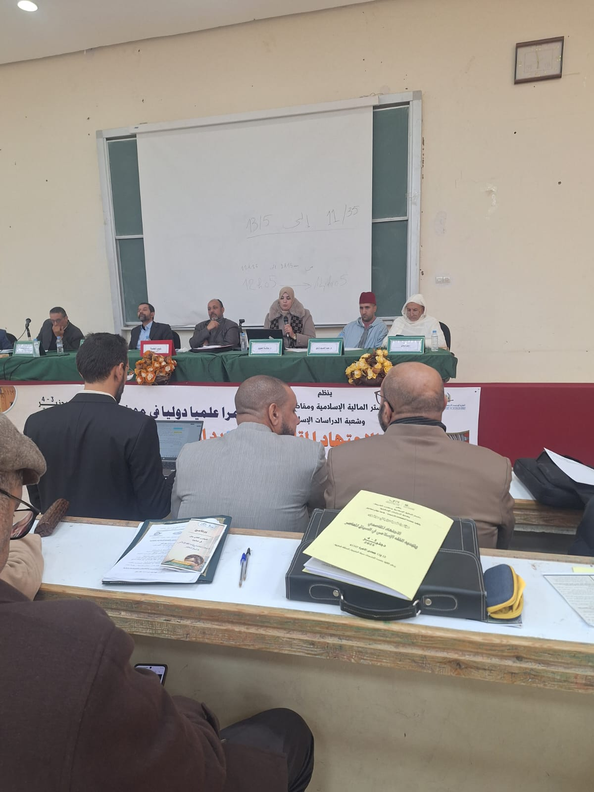
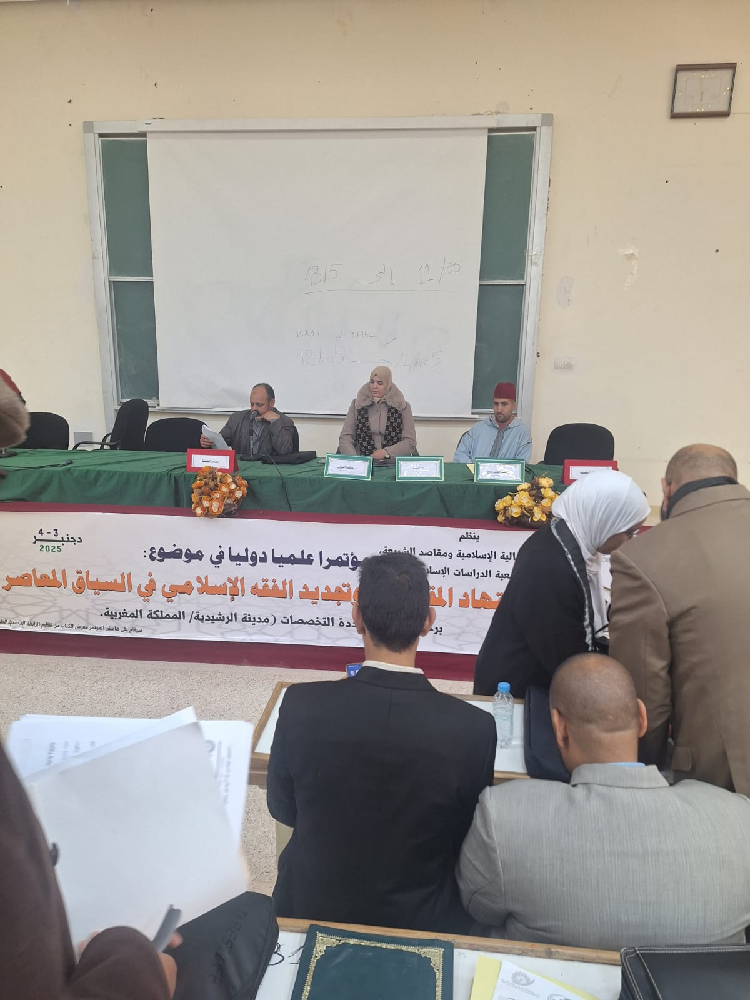

الإنتاج العلمي والفكري للدكتورة عائشة الطويل


يُعدّ الاجتهاد المقاصدي من أهم آليات التجديد الفقهي التي تمكن من مواكبة النوازل والقضايا المعاصرة، غير أن نجاحه يظل رهينا بالالتزام بضوابطه الشرعية والمنهجية التي تحفظ للنصوص قدسيتها، وتحقق مقاصد الشريعة بعيدا عن الانفلات التأويلي أو توظيف المقاصد خارج إطارها العلمي. وفي هذا البحث حاولت بيان: _ مفهوم الاجتهاد المقاصدي وأصوله العلمية. _ الضوابط الشرعية والمنهجية والواقعية التي تؤطر ممارسته. _ أبرز الإشكالات الناتجة عن غياب هذه الضوابط في بعض التطبيقات المعاصرة. _ نماذج من التجربة المغربية في الاجتهاد المقاصدي المنضبط، من خلال مدونة الأسرة وفتاوى المؤسسات العلمية. أسأل الله تعالى أن يجعل هذا العمل خالصا لوجهه الكريم، وأن ينفع به الباحثين وطلبة العلم، وأن يسهم في ترسيخ منهج علمي يجمع بين حفظ الثوابت الشرعية وتحقيق المقاصد والمصالح في ضوء الفهم الصحيح للشريعة الإسلامية. يسرني استقبال آرائكم وملاحظاتكم العلمية.
الجهة المنظمة : ماستر المالية الإسلامية ومقاصد الشريعة وشعبة الدراسات الإسلامية .
برحاب الكلية متعددة التخصصات مدينة الراشدية / المملكة المغربية .
التاريخ : الأربعاء 3 دجنبر 2025م